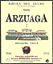
Arzuaga Crianza 1997
Bodegas Arzuaga Navarro, S.L.
Quintanilla de Onésimo (Valladolid)
D.O. Ribera del Duero
Precio: de 1.500 a 2.000 ptas.
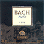
Bach Merlot 1996
Masía Bach
San Esteve de Sesrovires (Barcelona)
D.O. Penedés
Precio: hasta 1.000 ptas.
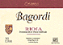
Bagordi Crianza 1997
Bagordi, S.L.
Andosilla (Navarra)
D.O.Ca. Rioja
Precio: de 1.500 a 2.000 ptas.
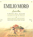
Emilio Moro Crianza 1997
Emilio Moro, S.L.
Pesquera de Duero (Valladolid)
D.O. Ribera del Duero
Precio: de 1.500 a 2.500 ptas.
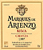
Marqués de Arienzo
Bodegas Domecq, S.A.
Laguardia y Elciego
D.O. Rioja.
Precio: de 1.000 a 1.500 ptas.
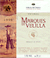
Marqués de Velilla Crianza 1996
Grandes Bodegas
La Horra (Burgos)
D.O. Ribera del Duero
Precio: de 1.500 a 2.500 ptas.
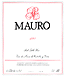
Mauro 1998
Bodegas Mauro, S.A.
Tudela de Duero (Valladolid)
Precio: de 2.500 a 5.000 ptas.
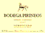
Merlot - Cabernet 1997
Bodega Pirineos
Barbastro (Huesca)
D.O. Somomtano
Precio: hasta 1.000 ptas.
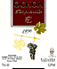
Ochoa Tempranillo Crianza 96
Bodega Ochoa, S.A.
Olite (Navarra)
D.O. Navarra
Precio: de 1.000 a 1.500 ptas.
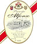
Príncipe Alfonso 1996
Bodega Las Monjas
Ronda (Málaga)
Precio: hasta 1.000 ptas.
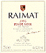
Raimat Pinot Noir 1995
Bodegas Raimat
Raimat (Lleida)
D.O. Costers del Segre
Precio: de 1.000 a 1.500 ptas.